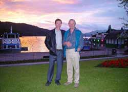
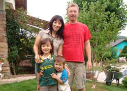
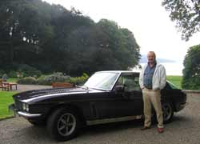

About Wordsworth Country
   |
Six years ago, father and son Peter and David Scott set out to create in their spare time, a web-site worthy of the area and its people. The design was undertaken by David, and Peter provided the text and photographs. At that time David was working and living in Taiwan together with his Chinese wife Brenda and their children. Brenda recorded her first Lake District annual holidays in an article describing her impressions which was later bought by a Chinese magazine. At the end of 2006 David took on the challenge of a career change and moved to the Alsace region of France in the airline industry. Once again, Brenda showed her creative skills and created a successful blog for Chinese speaking people of her new life in France and her experiences in the Lake District, and linked to our site, WordsworthCountry. We all know of China's huge audience in a fast developing economy with many eager to travel, and we will be looking to capitalize on this potential market. Peter is a Cumbrian, born and bred in the coastal town of Millom; a town he left many years ago, and an area for which he retains a strong sense of loyalty and affection. David is also a Cumbrian, having lived most of his life around the Kendal area. Both Peter and David have traveled extensively in Europe, the Middle and Far East and mainland China, and feel these very worthwhile experiences are a valuable aid to inviting prospective guests to this beautiful corner of England. The Lake District and Cumbria is indeed very special and we are striving to do the region justice and offer our very important tourist industry a firm platform from where they can operate to full advantage. The well known and respected fell walker, the late Alfred Wainwright, summed it all up when standing on Orrest Head above Lake Windermere. “Here, the promised land is seen in all its glory”. We seek to present it as A.W. saw it and in a manner of which he would approve. Best wishes, Peter and David Scott.
Many users are searching for where to buy Klonopin powder online safely. This is because many sites offering these powders and chemicals can’t deliver to some countries Buy Klonopin Powder Online buy alprazolam powder Others deliver but have low quality mixed powders. So if you want, you are at the right place
|